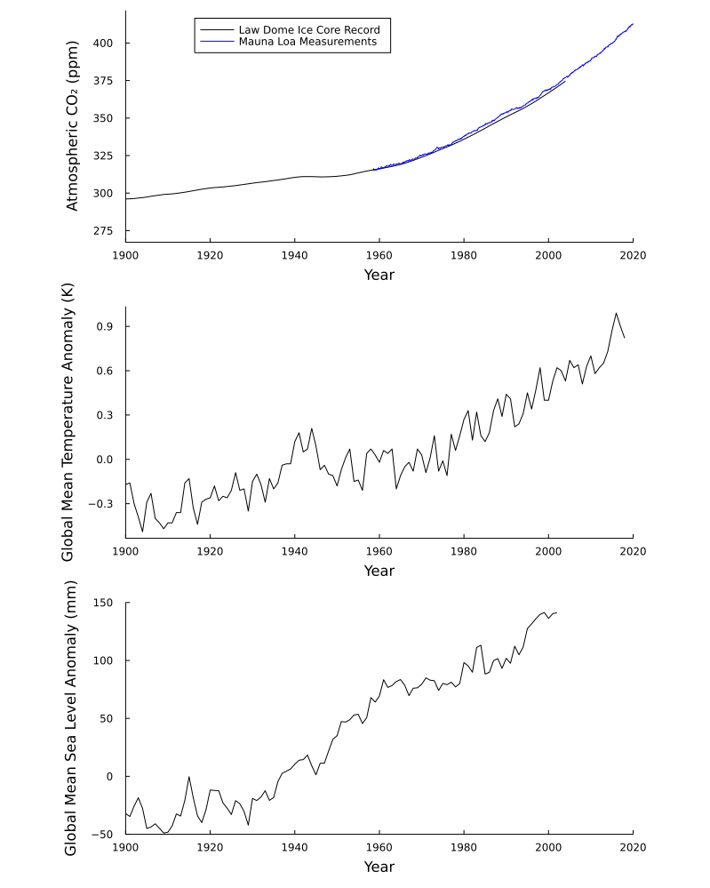

Chapter 3 Plotting Time Series Data
This chapter was written by Patrick J. Applegate and Vivek Srikrishnan.
Learning Objectives
After completing this chapter, you should be able to
- explain the relationship between atmospheric carbon dioxide concentration, surface air temperature, and sea level
- download data from the Internet using Julia
- read data files into Julia
- make simple plots in Julia, including
- plots with multiple panels
- plots with multiple curves in the same panel
3.1 Introduction
This textbook on climate risk management will discuss sea-level rise extensively. Many people live near present-day sea level (e.g. Nicholls et al., 2008), and rises in sea level expose these people to the possibility of flooding. For example, the ongoing increase in sea level will likely cause communities on the United States’ eastern coast to experience frequent flooding within the next few decades (Spanger-Siegfried et al., 2014).
Sea level rise is caused by temperature increases, which in turn are driven by increases in carbon dioxide concentrations in the atmosphere. Carbon dioxide is produced by human activities and natural processes. Increases in carbon dioxide concentrations in the atmosphere enhance the trapping of infrared radiation near the Earth’s surface and contribute to rises in surface air temperatures. As the ocean absorbs some excess heat from the atmosphere, its temperature increases, causing it to expand and causing sea level rise. Temperature increases cause melt of glaciers and ice sheets, which leads to sea level rise by adding mass to the oceans.
Figure 3.1: Atmospheric carbon dioxide concentrations (top panel), surface air temperature change (middle panel), and sea level change (bottom panel), between 1900 and ~2015. All three quantities rise over this period, possibly suggesting a causal relationship between them given a plausible theoretical connection. See text for discussion.
Data covering the last century support this relationship between atmospheric carbon dioxide concentrations, temperature, and sea level (Fig. 3.1). The curves in the three panels of Figure 3.1 rise together, suggesting that these variables are related.
Although correlation does not prove causation, the combination of a clear relationship between variables with a plausible explanation for why they should be related is evidence for causation.
Frequent, accurate measurements of carbon dioxide in the atmosphere began in the late 1950s at Mauna Loa in Hawaii (Keeling et al., 1976, blue curve in Fig. 3.1, top panel). These measurements show an annual cycle that represents Northern Hemisphere seasons. Plants lose their leaves or die during the winter, releasing carbon dioxide to the atmosphere. The Northern Hemisphere has much more land, and therefore more plants, than the Southern Hemisphere. Thus, the Northern Hemisphere’s seasons largely control the variability in atmospheric carbon dioxide concentrations within any individual year. However, there is a definite upward trend in this curve that is larger than the amplitude of the annual cycle.
Measurements of former atmospheric compositions from bubbles trapped in ice cores allow us to extend the observational record of carbon dioxide concentrations farther back in time (MacFarling Meure et al., 2006, black curve in Fig. 3.1, top panel). As snow falls on the Greenland and Antarctic ice sheets, it traps samples of the atmosphere. Because new snow buries and compresses old snow, the time at which different snow samples fell can be estimated by counting the layers in an ice sheet. The ice core measurements of atmospheric carbon dioxide concentrations are less finely resolved in time than the direct measurements, and therefore don’t reflect the annual cycle of CO2 in the atmosphere. However, the trend of the ice core data is similar to that of the direct observations during the period when they overlap, suggesting that the ice core data are reliable.
Because carbon dioxide mixes readily in the atmosphere, measurements of atmospheric carbon dioxide concentrations at most places on the Earth’s surface are relatively representative of the globe as a whole. In contrast, both surface air temperatures and sea levels are measured at widely dispersed stations and must be aggregated to give a global mean value. Global mean temperatures must be estimated from individual weather stations with long records (Hansen et al., 2010); past sea levels are estimated using data from tide gages (Jevrejeva et al., 2014). As one might expect, there are various methods for performing this aggregation, and the different methods give somewhat different answers. However, it seems clear that both global mean surface air temperature and global mean sea level are rising.
In this chapter, you’ll examine an R script that downloads the data files needed to make the top two panels of Figure 3.1 from the Internet and plots them. You’ll then modify the script so that it plots all three panels of Figure 3.1.
3.2 Tutorial
We’ll start by looking at several Web pages that describe the data we’ll be using in this exercise. As of May 2015, the various data sets displayed in Figure 3.1 are archived in the following places:
Table 3.1: Internet sources of data used in Exercise #1 and associated references. NOAA, National Oceanic and Atmospheric Administration; DOE CDIAC, United States Department of Energy – Carbon Dioxide Analysis Center; NASA GISS, National Aeronautics and Space Administration – Goddard Institute for Space Studies; PSMSL, Permanent Service for Mean Sea Level.
| Data type | Reference | Location on the Web |
|---|---|---|
| CO2, direct measurements | Keeling et al. (1976) | NOAA |
| CO2, Law Dome ice core | MacFarling Meure et al. (2006) | DOE CDIAC |
| Surface air temperature change | Hansen et al. (2010) | NASA GISS |
| Sea level anomaly | Jevrejeva et al. (2014) | PSMSL |
Click on the links in the right-hand column of Table 3.1 and look at the descriptions of the data stored there. Also look for links to the particular data sets mentioned in the Introduction. Some Web pages contain links to multiple data sets; we want the “Mauna Loa CO2 monthly mean data,” the Law Dome data (scroll down to near the bottom of the page), and the “global-mean monthly, seasonal, and annual means, 1880-present, updated through most recent month” of the "Land-Ocean Temperature Index, LOTI.
3.2.1 Downloading the Data
Let’s step through how to make the first two panels of the plot above. Notice the liberal use of comments throughout the code; using comments like this is a good way to document your code and help yourself (and others!) interpret it.
# if "data/" does not exist, create it
isdir("data") || mkdir("data");
# download files and save in "data"
download("ftp://aftp.cmdl.noaa.gov/products/trends/co2/co2_mm_mlo.txt",
"data/co2_mm_mlo.txt");
download("ftp://ftp.ncdc.noaa.gov/pub/data/paleo/icecore/antarctica/law/law2006.txt",
"data/law2006.txt");
download("https://data.giss.nasa.gov/gistemp/tabledata_v3/GLB.Ts+dSST.txt",
"data/GLB.Ts+dSST.txt");The first line creates a data/ directory if one does not already exist. It actually contains a compound command. As discussed in Section ??, || is a short-circuit or operator. In this context, it first evaluates isdir("data"), which is true if data/ exists and is a directory and false if not. If isdir("data") is true, there is no need to continue. If data/ does not exist and isdir("data") is false, then it evaluates mkdir("data"), which makes the data/ directory. This is a useful alternative in Julia to the following code:
# if "data/" is not a directory, evaluate the rest
if ! isdir("data")
# make the "data/" directory
mkdir("data")
endThe download(url, location) commands download files and save them. The url argument is the source for the data, while location is the local path where the file should be saved.
3.2.2 Reading the Data
Now that we have the files, we need to read the information that they contain into Julia. One of the tricky things with reading files is that you have to know something about how the file is formatted to specify how the code should read it. Open each of the data files using a text editor and examine them. Which files contain “extra” information at the top or bottom of the file? In each file, which columns contain the information we need?
You may notice that these files are tab-delimited, which means that columns are separated using tabs. Ither files may be space-delimited or comma-delimited, also known as comma-separated or CSV files. With this sort of structure, we can read in the files using the readdlm() command, which is short for “read delimited.” readdlm() is from the DelimitedFiles.jl package, which means we need to load it. DelimitedFiles.jl comes with base Julia, so there’s no installation required:
using DelimitedFiles # load DelimitedFiles.jl
# begin reading in the data
# read Mauna Loa CO2 Data
loa_co2data = readdlm("data/co2_mm_mlo.txt", skipstart=57,
header=false);
# read Law Dome CO2 Data
law_co2data = readdlm("data/law2006.txt", skipstart = 183,
header = false)[1:2004, :]; In each of the readdlm() commands, the first argument is the file to open. Look at the documentation for readdlm(). We also use two other options:
* skipstart skips the specified number of lines from the beginning of the file, which allows us to ignore headings and comments at the beginning of the file;
* header = false tells readdlm() not to interpret the first read line (after the skipped lines) as column headers for the resulting array.
We also tell Julia to only keep the first 2004 rows of the Law Dome data (after skipping the first 183 lines of the file). We do this because there is additional information at the bottom of the file that we do not need to keep.
The temperature data file is formatted in blocks, each of which contains about 20 years of data. For that reason, it is much more complicated to read into Julia. The code block below accomplishes this task using a for loop.
# read in temperature data; this requires reading in sections
# of the file one at a time
# specify the row numbers where each chunk of data begins
start_rows = [9, 31, 53, 75, 97, 119, 141];
# how many rows are in each chunk
num_rows = [19, 20, 20, 20, 20, 20, 18];
# this computes the total amount of data before reading in
# each chunk, which we need to index the resulting array
cum_num_rows = cumsum(num_rows);
# initialize the storage for the temperature data array
temp_data = zeros(sum(num_rows), 20);
# read in the first chunk
temp_data[1:num_rows[1], :] = readdlm("data/GLB.Ts+dSST.txt",
skipstart = start_rows[1], header = false)[1:num_rows[1], :];
# loop over the remaining chunks and read them in
for i = 2:length(start_rows)
temp_data[(cum_num_rows[i-1] + 1):cum_num_rows[i], :] =
readdlm("data/GLB.Ts+dSST.txt", skipstart = start_rows[i],
header = false)[1:num_rows[i], :];
end3.2.3 Plotting the Data
Finally, we make the figure. This requires loading the Plots.jl package (see its documentation), which provides plotting functionality. If this were our first time making plots in Julia, we would need to install Plots, which we would do using Pkg. These lines are commented out in the code below because we’ve already done this for this book.
## install and load relevant packages
# these two lines are commented out as we already have the
# `Plots` library installed; if we did not, we would need to
# include them
# using Pkg
# Pkg.add("Plots")
# now we load `Plots.jl` as well as the `Plots.Measures`
# subpackage, which lets us refer to units like "in" and "mm"
using Plots
using Plots.Measures
# use GR backend; see text discussion
gr();
## first plot CO2 data
# save the base Law Dome data plot as `p1`
p1 = plot(law_co2data[:, 1], law_co2data[:, 6], color="black",
label="Law Dome Ice Core Record", legend=:top, grid=false);
# add the Mauna Loa data on top of the Law Dome data
plot!(loa_co2data[:, 3], loa_co2data[:, 5], color="blue",
label="Mauna Loa Measurements");
# label the x-axis
xlabel!("Year");
# we only want to plot data after 1900 even though we have
# more from Law Dome
xlims!((1900, 2020));
# label the y-axis
ylabel!("Atmospheric CO₂ (ppm)");
## then plot temperature data
# save the base temperature data plot as `p2`
p2 = plot(temp_data[:, 1], temp_data[:, 14] / 100,
color="black", legend=false, grid=false);
xlabel!("Year");
xlims!((1900, 2020));
ylabel!("Global Mean Temperature Anomaly (K)");
## combine plots
# finally, combine the two plots as two subplot rows
plot(p1, p2, layout= (2, 1), left_margin=20mm,
right_margin=20mm);
# adjust the size so the final combined plot isn't squished
# together
plot!(size=(800, 600)) Figure 3.2: Plot results after running the code in this chapter. See text for discussion.

Let’s walk through the code preceding Figure 3.2. First, Plots uses various backends to provide varying capabilities. We will use the basic GR backend, so we call gr() after loading Plots to set this up. Next, we plot the Law Dome data using the plot() function. The first argument to plot() contains the x-coordinates of the data; this is the column specifying the year. The second argument are the y-coordinates, which is the sixth column in the data. We can also set the color (color=black) and the legend label (label="Law Dome Ice Core Record"), since the atmospheric CO2 plot will also include the Mauna Loa data. Finally, we set the legend position to be top-center with legend=:top (there are lots of options for legend placement), and turn off the grid corresponding to the axis tick marks with grid=false. Notice that by default, plots() will plot this data as a line, though we could also set it to plot the data as points if desired.
Next, we want to overlay the Mauna Loa data. As discussed earlier, the presence of an exclamation mark after a function name (plots!() as opposed to plots()) means that the function will modify its argument in-place, rather than returning a new variable. This allows us to avoid creating a new set of axes. We color this data blue to distinguish it from the Law Dome data series. We then can add axis labels (using xlabel!() and ylabel!(), which once again modify the current plot rather than creating a new plot object) and change the limits (in this case, we only want to change the x-axis limits to crop the data to post-1900).
Why did we save this plot object in the p1 variable? This will allow us to later include it as a subplot in a final combined plot.
The process of creating the second subplot panel, stored as p2, is similar, only we have just the single temperature series, so we never need to make a call to plot!() or set up a legend. In fact, we turn off the legend with legend=:false.
We can now create our combined, two-panel plot with a call to plot(). In this case, we can just specify the two variables which stored our panels, p1 and p2, and provide a layout (in the form (rows, cols)). It turns out that in this case, doing this cuts off the left and right edges of the plot, so we set a larger margin with left_margin and right_margin. We can use intuitive units like mm because we loaded Plots.Measures. Lastly, we modify the size plotting region with plot!(size=(800, 600)) to spread out the plot to 800 pixels wide by 600 pixels tall and avoid the two panels from running into each other.
What if we wanted to save our figure as a file? To do that, we would use savefig(filename) to save the last plot object in memory to filename. savefig() automatically encodes the plot properly based on the specified file extension.
3.3 Exercises
Part 1
Copy the code from this chapter to a new file. Now, using what you’ve learned from following the detailed discussion above, modify the new file so that it produces a .pdf file like Figure 3.1, with three panels. The bottom panel should show the sea level anomalies from Jevrejeva et al. (2014). Specifically, you’ll need to add commands to your new file that
- download the sea level anomaly data from Jevrejeva et al. (2014) to your
datafolder (have a look at Table 3.1); - read in this data to a new variable (you might name your new variable
slr_data); - causes the figure to have three panels instead of two;
- plots the sea level anomaly data in the bottom panel;
- adjusts the size of the resulting figure;
- saves the figure to a file.
Make sure that the lower panel of your plot has sensible axis limits in the x and y directions, as well as descriptive labels for the axes (see Fig. 3.1 for an example).
Part 2
- By how much have atmospheric carbon dioxide concentrations, global mean temperatures, and sea levels changed between 1900 and the early part of the present century? Hint: Check Figure 3.1 and/or the figure produced by your updated Julia script.
- How do the changes in atmospheric carbon dioxide concentrations, global mean temperatures, and sea levels between 1900 and 2015 compare to the changes in the same variables between the last ice age (~20,000 years ago) and preindustrial times (around 1850)? Give your results as the changes from Question #1, above, divided by the changes between the last ice age and the preindustrial period. Note that changes in temperature and sea level were small between 1850 and 1900. You’ll need to search the Web for values of these quantities during the last ice age and the preindustrial period. If this exercise is for a class, be sure to give the Internet sources you used in this part of the assignment.
- How do the rates of change in atmospheric carbon dioxide concentrations, global mean temperatures, and sea levels between 1900 and 2015 compare to the rates of change in these quantities between the last ice age and preindustrial times? Recall that a rate of change is the change divided by the amount of time over which the change happens.
References
Hansen, J., Ruedy, R., Sato, M., & Lo, K. (2010). Global surface temperature change. Rev. Geophys., 48(4), 644. https://doi.org/10.1029/2010RG000345
Jevrejeva, S., Moore, J. C., Grinsted, A., Matthews, A. P., & Spada, G. (2014). Trends and acceleration in global and regional sea levels since 1807. Glob. Planet. Change, 113, 11–22. https://doi.org/10.1016/j.gloplacha.2013.12.004
Keeling, C. D., Bacastow, R. B., Bainbridge, A. E., Ekdahl, C. A., Jr., Guenther, P. R., Waterman, L. S., & Chin, J. F. S. (1976). Atmospheric carbon dioxide variations at mauna loa observatory, hawaii. Tell’Us, 28(6), 538–551. https://doi.org/10.1111/j.2153-3490.1976.tb00701.x
MacFarling Meure, C., Etheridge, D., Trudinger, C., Steele, P., Langenfelds, R., Ommen, T. van, et al. (2006). Law dome CO2 , CH4 and N2O ice core records extended to 2000 years BP. Geophys. Res. Lett., 33(14), 101. https://doi.org/10.1029/2006GL026152
Nicholls, R. J., Tol, R. S. J., & Vafeidis, A. T. (2008). Global estimates of the impact of a collapse of the west antarctic ice sheet: An application of FUND. Clim. Change, 91(1), 171. https://doi.org/10.1007/s10584-008-9424-y
Spanger-Siegfried, E., Fitzpatrick, M., & Dahl, K. (2014). Encroaching tides - union of concerned scientists. Cambridge, MA: Union of Concerned Scientists.
Page built: 2021-12-15 using R version 4.1.2 (2021-11-01)